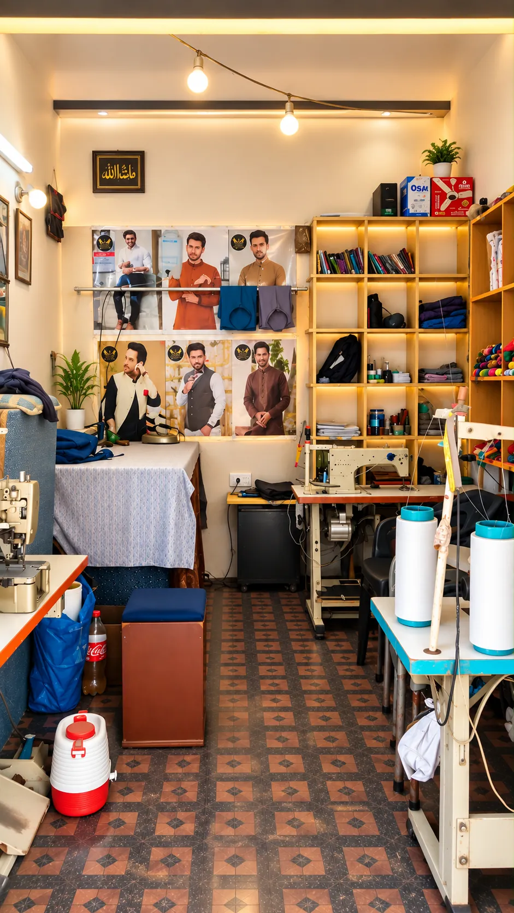

Visiting a tailor for the first time is easier when you know what to expect. A little preparation helps you explain exactly what you want.
What to bring
- Your fabric, if you already have it.
- A photo or sample of the style you like: collar, placket, cuffs, pockets.
- A garment that fits you well, so the tailor can see the fit you prefer.
Questions worth asking
- How long will stitching take?
- Will there be a fitting before the garment is finished?
- What can be adjusted afterwards if something is not quite right?
- Is there anything about my fabric the tailor should know?
Explain the style clearly
Pictures say more than words. If you are unsure about collars or cuffs, ask the tailor to show you options and talk through what suits the garment and your taste.
Tip: you can start the conversation on WhatsApp first, then come to the shop to be measured.
At Ashfaq Tailor, Street No. 1, Iqbal Town, GM Abad, Faisalabad, we are happy to talk through your style and fitting before you decide.